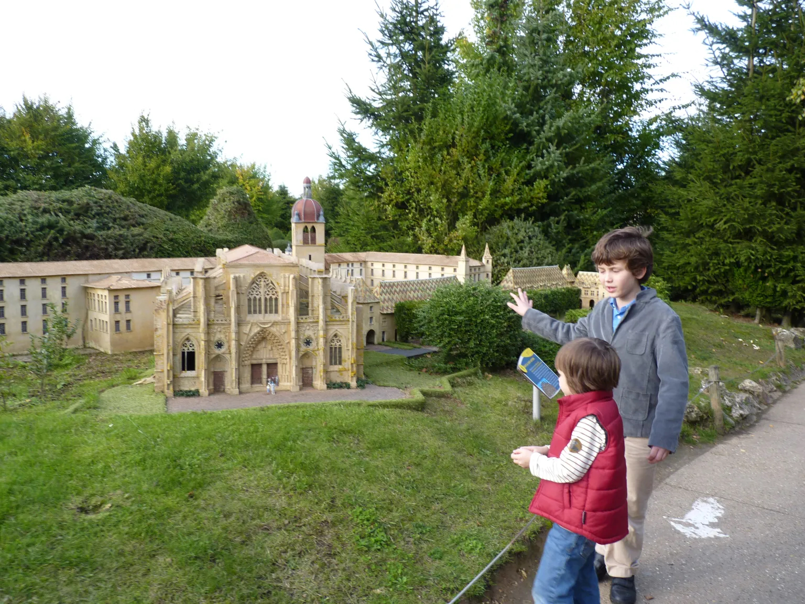
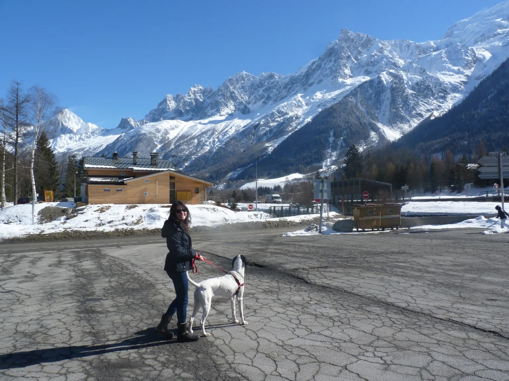

One of the many unexpected side effects of starting my own business is the amount of praise and admiration I receive from friends and relatives. People take their time to tell me how impressed they are, what a great job I'm doing and at times what an inspiration I am to them. This, together with happy clients who also gush with praise, could make me think I'm doing something special or remarkable, but it's simply not the case. I have been on the other side and I know that paid work and being a full-time parent take the same amount of effort and energy, but with paid work you get the money, you get the praise and the recognition. Same energy spent, much more reward received.
When I moved from England to France — this was the first relocation I did with my own little family: me, my husband and my son — we made the decision that I would stop working, concentrate on our son, and have a second baby. Our first was already five years old. So began my "mum" career.
In the beginning, it was all fascinating, interesting. I was living in Paris and I had, wait for it… a whole hour to myself in the afternoons. Looking back now I just don't understand why this made me feel so guilty, but it did. I tried my best to use this hour wisely and I did with it what I could, always remembering to feel the guilt and the incredible gratefulness one must feel when faced with such lavish luxury.
My son was going to the local school, didn't speak a word of French, and I felt I should be there for him, be stable at home, make him my priority. I was told by the school that the lunch canteen was an absolute mess and that it was in his interest that he eats at home with me every day, so he did. The hour after I dropped him off for the second time in one day, after lunch, was mine and I got to know my local area really well with it — it's not like I could go very far. Although I did at times just get on the Métro to spend five minutes looking at the Arc de Triomphe, one of my favourite monuments in the world, and then rush back feeling guilty that I might be three minutes late picking up my son.
Thankfully my efforts paid off. Our son became super happy at school, learned French, started having his lunches in the canteen and boom — I got pregnant with my second. This was wonderful and I was so, so happy, but also so, so sick. Now I was a stay-at-home mum, with a five-year-old, a husband with little time for anything outside his work, and a baby on the way who seemed intent on not letting me keep anything in my stomach. And I still managed to feel guilty and grateful. How wonderful to not have to go to an office and work a full day — the luxury of being sick in your own loo throughout the afternoon is just unparalleled.
And then we were four
Fast forward nine months and a little man is born, who is now intent on never letting me sleep again. My first child, the one who was the priority in my existence, was clearly mourning the loss of a mum who was present and played endless hours with him, and welcoming into his life this new version of her — a tired and very unappreciated human.
I do not and would not blame my partner for these feelings, although he has his responsibility in them, but it seems to me that there was a much bigger issue. I wasn't that young when my second child was born — 32 — so I had worked, I had worked both full and part time, I had worked through a pregnancy already, I had dropped a little child off at the nursery to go and work all day, so I was in a good position to judge how hard being a full-time parent was. But people only told me how fortunate I was to be in this privileged position, which yes, is true to an extent.
Feeling like death warmed up with three hours' sleep, having to look after a little baby and a second child, ensuring the house was decent and the husband was fed, while being told how lucky I was — it was a kind of communal gaslighting of epic proportions. This life was much, much harder than any I had ever had, but nobody believed me. I wasn't allowed to complain, I wasn't allowed to feel anything but very grateful. It wasn't right.

One of the many days out in France with my boys. Big brother is teaching little brother all about history, and mummy is very proud.
Please let's not forget that I was doing all this alone. I didn't have my family and long-standing friends with me. I really was on my own, building a community and starting from zero, again, while looking after my family with minimal practical support from a husband who was also trying to make sense of his new life and work.
My first few years in Paris, although wonderful, were easily some of the hardest years of my life. But nobody saw it, nobody validated it. I didn't have a boss and an appraisal, I didn't have HR talking to me about burnout. I had to carry on and educate myself, read about what to do in Paris with children, learn a brand new language while adapting to a brand new reality. I look back now and think I must have been some kind of superhero. How did I do it? How did I manage all this?
The best part was when my second child turned about two and some people started asking me if I wasn't looking for an occupation. I remember feeling numb at this question, which came from members of my family, people around me, and my husband's co-workers. It would shock me into silence, and not a lot can do that.
Being me, I fully ignored this and got seriously into my two projects: my boys. Life turned around when I started seeing things a bit differently, when I took that very conscious decision to treat my mum life as a job. I decided I had tasks and projects, I had targets and I would take an objective "appraisal" of my work on a regular basis, trying to find any areas for improvement. I made wonderful friends — all single parents — and we had holidays together and amazing days out every Wednesday (there is no school in France on Wednesdays). The memories I made during that time still warm up my heart today. To me, Paris is and always will be synonymous with great museum visits, fun days out, happy children and amazing friends. It's no wonder I miss Paris as if it were a member of my family — in a way, it is.
Move to Florence
Our move to Florence was much less traumatic, but just as life-changing. We moved from our home in Paris, the first (and as it turned out the only) one we had ever owned together, and we moved to an amazing villa in the Tuscan hills. The idea that I would work outside the home didn't even cross anyone's mind, and we settled into our new life with ease. The kids were growing, I finally had more than one hour to myself during the days, I had an instant amazing group of friends and endless activities to do together. The expat community here is great.
I guess once I had time to slow down and actually take a look at the state of things, it was easy to see the marriage had ended. So we went our separate ways. Once that happened and the kids were independent, yes, I got a job. I made it up on my own, I started it from nothing and it's the best job I've ever had. Sure I deserve to be recognised for this achievement — it's not easy and I work every day to keep it going, to make it better, it's more than a full-time job — but the "me" in Paris, the one who didn't have help, the one who is told she needs to be grateful while smelling of baby sick, needs to be seen. She is the hero and she is my inspiration every second of every day.

This is me on my very own move to Florence. We drove from Paris and this is one of the stops — it was beautiful, wonderful and exciting.
I have been on both sides, and the side that I take my strength and inspiration from isn't the one I'm on now. Working, bringing home the bacon, being told how amazing you are, being taken seriously and being seen are all wonderful things. True grit is in making just as much effort, putting in just as much energy, and never being recognised — and feeling guilty to even feel tired because "you can sleep when the baby does." Right.
What I'd want you to know
If you take anything from my experience, let it be this: when you relocate — to Florence, to Miami, to Mexico — and you're part of a family, no matter how much you love your job and no matter how amazing an opportunity this might be for you, remember to consider that a lot has to be given up for you to pursue this dream.
Understand the teenager who just doesn't see the point. The partner who is hesitant. The kids who take a long time to settle in the new school. All these are valid feelings and need to be addressed.
If your partner gives up their job for you to pursue this dream, be grateful, appreciate this, see them. Talk about the situation, validate their feelings, don't deny them the right to feel this might be too difficult or overwhelming. Be a source of strength, support them. Yes, you have provided your family with an amazing opportunity, but make sure this is something positive — truly — for all of them, not just for you.
Next time you have an appraisal from your boss, remember that partner sitting at home, making just as much effort to impress, not reaching anyone. How can you make this better?
You don't have to carry this alone
I've been the invisible partner. I know what it feels like to pour everything into holding a family together in a foreign country and to be told you should just feel lucky. That experience is a big part of why I became a counsellor — because I know how much it helps to have someone who truly gets it.
If any of this resonates with you — whether you're the trailing partner, the working spouse who senses something is wrong, or anyone caught in the emotional complexity of life abroad — talking to someone who understands can make all the difference.